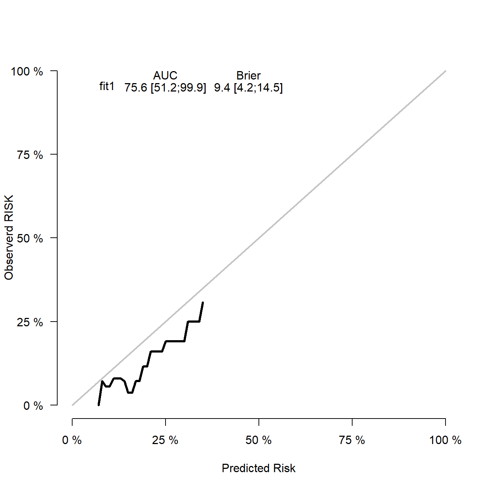
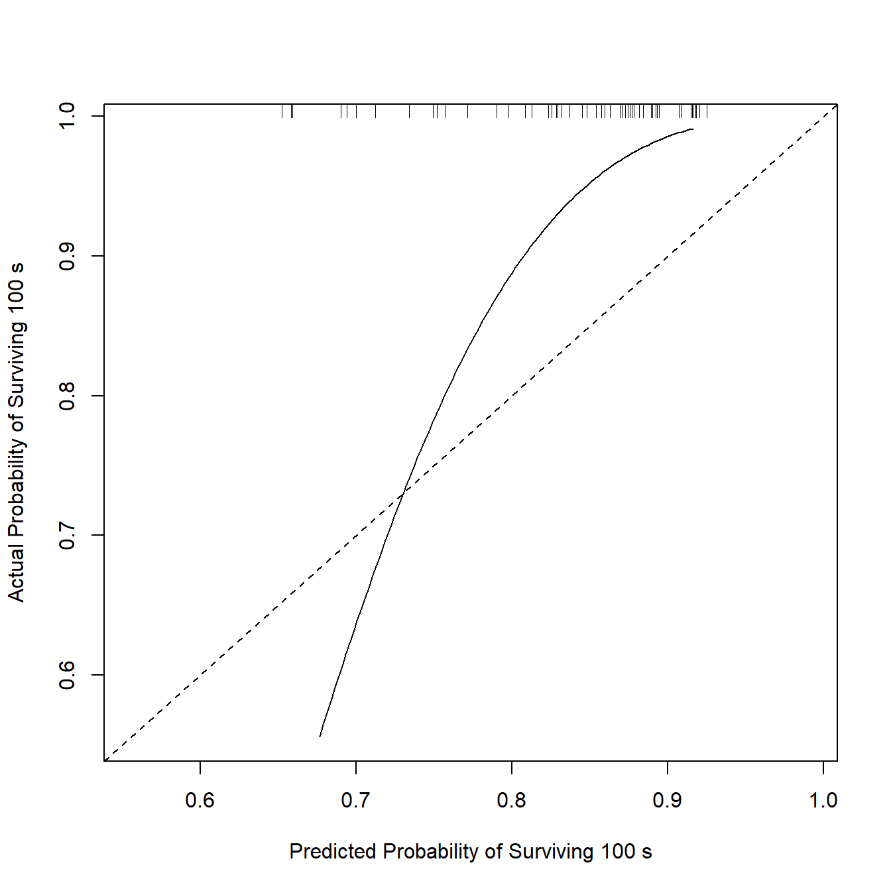
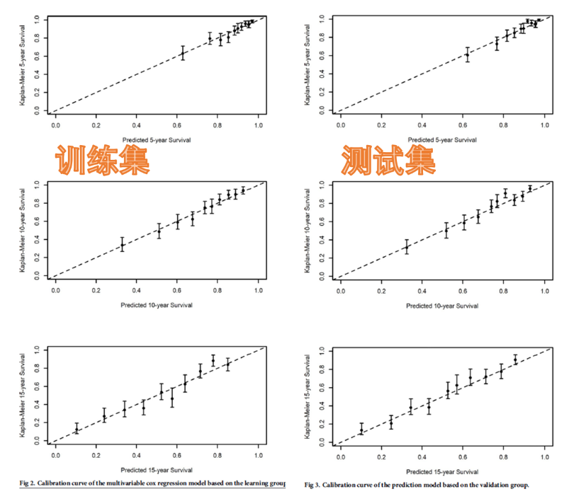
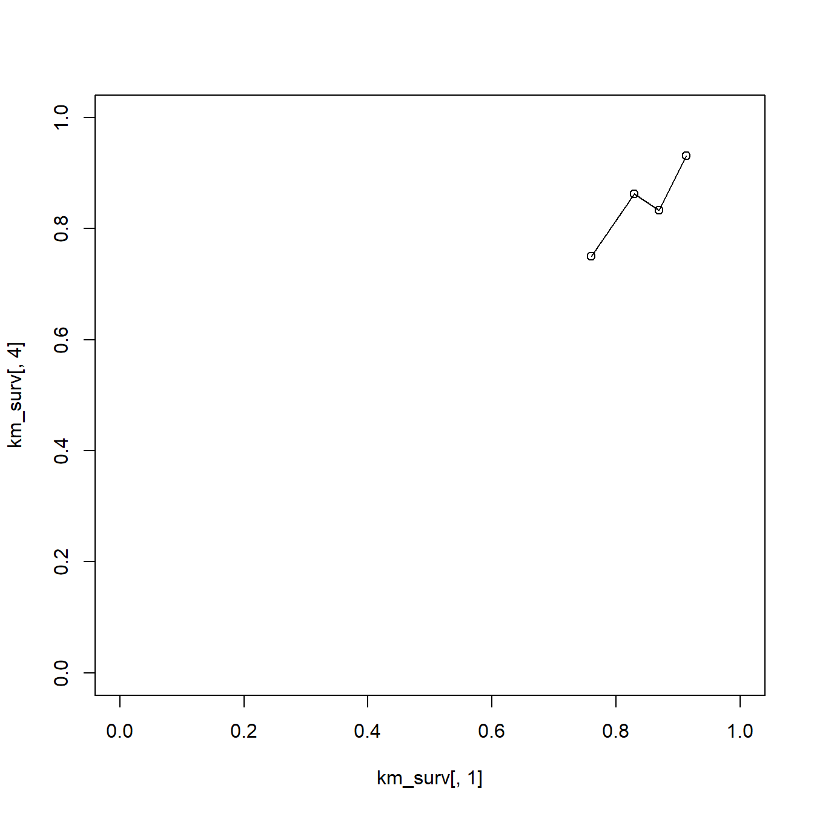
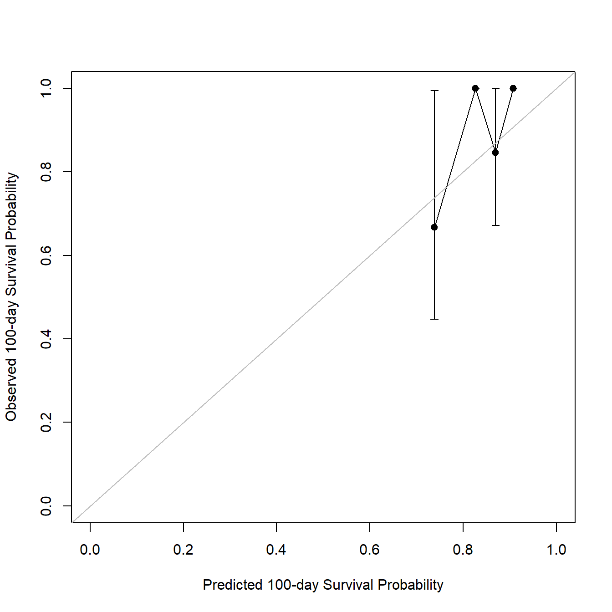

rm(list = ls())
library(survival)
lung$status <- ifelse(lung$status == 2,1,0)
lung <- na.omit(lung)
dim(lung)
## [1] 167 10
str(lung)
## 'data.frame': 167 obs. of 10 variables:
## $ inst : num 3 5 12 7 11 1 7 6 12 22 ...
## $ time : num 455 210 1022 310 361 ...
## $ status : num 1 1 0 1 1 1 1 1 1 1 ...
## $ age : num 68 57 74 68 71 53 61 57 57 70 ...
## $ sex : num 1 1 1 2 2 1 1 1 1 1 ...
## $ ph.ecog : num 0 1 1 2 2 1 2 1 1 1 ...
## $ ph.karno : num 90 90 50 70 60 70 70 80 80 90 ...
## $ pat.karno: num 90 60 80 60 80 80 70 80 70 100 ...
## $ meal.cal : num 1225 1150 513 384 538 ...
## $ wt.loss : num 15 11 0 10 1 16 34 27 60 -5 ...
## - attr(*, "na.action")= 'omit' Named int [1:61] 1 3 5 12 13 14 16 20 23 25 ...
## ..- attr(*, "names")= chr [1:61] "1" "3" "5" "12" ...34 Cox回归测试集校准曲线绘制
之前给大家介绍了逻辑回归(logistic)测试集的校准曲线画法，给大家介绍了6种方法！
不过Cox回归测试集的校准曲线就没有那么简单了。
目前最简单的COX回归测试集的实现方法是通过riskRegression包。
使用survival包的自带的lung数据集做演示。
34.1 加载数据
34.2 数据分割
把数据随机划分为训练集、测试集，划分比例为7:3
set.seed(123)
ind <- sample(1:nrow(lung),nrow(lung)*0.7)
train_df <- lung[ind,]
test_df <- lung[- ind, ]
dim(train_df)
## [1] 116 10
dim(test_df)
## [1] 51 1034.3 方法1：riskRegression
使用riskRegression轻松实现，训练集的校准曲线就不画了，直接画测试集的校准曲线。
library(riskRegression)
## Warning in .recacheSubclasses(def@className, def, env): undefined subclass
## "ndiMatrix" of class "replValueSp"; definition not updated
## riskRegression version 2023.09.08
# 在训练集建立模型
coxph_fit <- coxph(Surv(time, status) ~ age + sex + ph.ecog + ph.karno + pat.karno,
data = train_df,
x = T, y = T)
# 画出测试集的校准曲线
set.seed(1)
cox_fit_t <- Score(list("fit1" = coxph_fit),
formula = Surv(time, status) ~ 1,
data = test_df, # 这里写测试集即可
plots = "calibration",
conf.int = T,
B = 500, # 重抽样500次
M = 50,
times=c(100) # 时间
)
# 画图即可
plotCalibration(cox_fit_t,
cens.method="local",
xlab = "Predicted Risk",
ylab = "Observerd RISK")
这个就是测试集的校准曲线了，非常简单，而且支持返回数据自己用ggplot2画，你想要的样子它都可以有！可参考推文：生存资料校准曲线的绘制
34.4 方法2：rms
回归建模神包rms当然也是支持COX回归测试集校准曲线的，不过隐藏的比较深。
在上次介绍logistic回归测试集的校准曲线时，我们介绍过val.prob函数，这里给大家介绍下val.surv函数。
首先还是要使用使用cph函数建立cox回归模型，这里我们指定时间为100天：
suppressMessages(library(rms))
# 一定要记得打包数据
dd <- datadist(train_df)
options(datadist = "dd")
units(train_df$time) <- "days"
cph_fit <- cph(Surv(time, status) ~ age + sex + ph.ecog + ph.karno + pat.karno,
data = train_df,
x = T, y = T,
time.inc = 100
)然后计算模型在测试集中的各种指标：
v <- val.surv(fit= cph_fit, # 模型
newdata = test_df, # 测试集
u=100, # 时间
#evaluate = 10,
S=Surv(test_df$time,test_df$status) # 测试集的生存对象
)
v
##
## Validation of Predicted Survival at Time= 100 n= 51 , events= 40
##
## hare fit:
##
## dim A/D loglik AIC penalty
## min max
## 1 Add -284.61 573.15 11.98 Inf
## 2 Add -278.62 565.11 7.05 11.98
## 3 Add -275.81 563.41 NA NA
## 4 Add -271.57 558.87 3.15 7.05
## 5 Add -270.00 559.65 0.00 3.15
##
## the present optimal number of dimensions is 4.
## penalty(AIC) was the default: BIC=log(samplesize): log(51)=3.93
##
## dim1 dim2 beta SE Wald
## Constant -5.6 1 -5.65
## Time 3.6e+02 0.01 0.0052 1.95
## Co-1 linear -0.091 0.52 -0.17
## Time 3.6e+02 Co-1 linear 0.0094 0.0033 2.89
##
## Function used to transform predictions:
## function (p) log(-log(p))
##
## Mean absolute error in predicted probabilities: 0.0894
## 0.9 Quantile of absolute errors : 0.1025之后通过调用plot实现测试集的校准曲线，可以看到这个校准曲线并不是通过分箱的方法获得的，这里使用了一种hare方法(通过polspline包实现，感兴趣的可以自己看看)，且在测试集中没得选，只能用这种方法(训练集的校准曲线可通过method参数选择)。
但是这里也要注意，仔细阅读Regression Modeling Strategies 就会发现，val.surv计算的是外部验证集的各种指标，画出来的图也是外部验证集的，这一点在logistic回归测试集校准曲线的6种实现方法 中也说过。
plot(v,
scat1d.opts=list(nhistSpike=200, side=3)
)
这里由于数据集样本量太少，结果并不好看，大家可以使用自己的数据(样本量尽量大一点)尝试一下。
2种方法，我还是比较推荐riskRegression，因为简单又强大。
但是很明显这种简单又好用的方法反而是在文献中出现的比较少的！
大家经常读文献就会发现这种COX回归测试集的校准曲线↓：

目前好像并没有包可以直接实现，不过也不是什么难题，下次介绍。
34.5 方法3
首先把数据集划分为训练集、测试集，然后在训练集建立cox模型
rm(list = ls())
library(survival)
lung$status <- ifelse(lung$status == 2,1,0)
lung <- na.omit(lung)
set.seed(123)
ind <- sample(1:nrow(lung),nrow(lung)*0.7)
train_df <- lung[ind,]
test_df <- lung[- ind, ]
# 在训练集建立cox模型
coxph_fit <- coxph(Surv(time, status) ~ age + sex + ph.ecog,
data = train_df,
x = T, y = T)34.5.1 训练集的校准曲线
对于生存分析来说，校准曲线的横纵坐标分别是模型预测的生存概率(predicted survival probability)和K-M法估计的生存概率(也可以称为Observed survival probability)，其中模型预测的生存概率是模型算出来的(生存分析一般是根据COX算出来的)，K-M法估计的生存概率则是根据乘积极限法(K-M法)计算的。
模型计算的生存概率很简单可以得到，比如训练集100天的校准曲线，首先计算cox模型预测的100天的生存概率：
# 模型预测的概率
set.seed(123)
train_p <- c((summary(survfit(coxph_fit, newdata=train_df), times=100)$surv))
head(train_p)
## [1] 0.6958190 0.9347173 0.8681793 0.7350013 0.8694693 0.8213824以上是通过模型计算出的生存概率，为了画出校准曲线，我们还需要真实的生存概率，怎么计算？通过K-M法。
如何通过K-M法计算真实的生存概率？
首先，分组。根据什么东西分组？就根据我们通过模型计算的概率分组。
为了保证每组都有人，我们就分为4组(可以多试几次)：
# 根据这几个点进行切分
cuts <- unique(quantile(c(0, 1, train_p), seq(0, 1, length = 5), na.rm = TRUE))
cuts
## [1] 0.0000000 0.8097154 0.8526484 0.8892975 1.0000000然后计算K-M法估计的生存概率：
suppressMessages(library(rms))
km_surv <- groupkm(train_p,
Srv = Surv(train_df$time,train_df$status),
u = 100,
cuts = cuts)
km_surv
## x n events KM std.err
## [1,] 0.7597781 28 24 0.7500000 0.10910895
## [2,] 0.8291634 29 20 0.8620690 0.07427814
## [3,] 0.8695150 30 23 0.8333333 0.08164966
## [4,] 0.9131132 29 13 0.9310345 0.05053987其中x就是模型预测的概率，KM是K-M法估计的真实概率，所以就可以画图了：
plot(km_surv[,1], km_surv[,4],xlim=c(0,1),ylim=c(0,1))
lines(km_surv[,1], km_surv[,4])
上面这个图比较简陋，下面进行美化。
plot(km_surv[,1], km_surv[,4],
xlim=c(0,1),ylim=c(0,1),
xlab = 'Predicted 100-day Survival Probability',
ylab = 'Observed 100-day Survival Probability'
)
lines(km_surv[,1], km_surv[,4])
# 计算误差线范围
errl <- ifelse(km_surv[,"KM"] == 0, 0,
km_surv[,"KM"] * exp(1.959964 * (-km_surv[,"std.err"])))
errh <- ifelse(km_surv[,"KM"] == 0, 0,
pmin(1, km_surv[,"KM"] * exp(1.959964 * km_surv[,"std.err"])))
# 添加误差线
errbar(x = km_surv[,"x"],
y = km_surv[,"KM"],
yminus = errl,yplus = errh,
add = T,
pch=16,cex=1,
asp=1,xaxs='i',yaxs='i'
)
# 添加对角线
abline(a = 0,b = 1,col='grey')
这个图就基本和上面一样了，和开头的文献里的图一模一样！
34.5.2 测试集的校准曲线
方法一模一样，很简单！
测试集100天的校准曲线，首先也是计算概率：
set.seed(123)
test_p <- c((summary(survfit(coxph_fit, newdata=test_df), times=100)$surv))然后分组：
cuts_t <- unique(quantile(c(0, 1, test_p), seq(0, 1, length = 5), na.rm = TRUE))
cuts_t
## [1] 0.0000000 0.7887829 0.8588841 0.8829986 1.0000000然后计算K-M法估计的生存概率：
suppressMessages(library(rms))
km_surv_t <- groupkm(test_p,
Srv = Surv(test_df$time,test_df$status),
u = 100,
cuts = cuts_t)
km_surv_t
## x n events KM std.err
## [1,] 0.7379403 12 10 0.6666667 0.2041241
## [2,] 0.8263202 13 12 1.0000000 0.0000000
## [3,] 0.8693478 13 11 0.8461538 0.1182625
## [4,] 0.9073257 13 7 1.0000000 0.0000000然后就可以画图了：
plot(km_surv_t[,1], km_surv_t[,4],
xlim=c(0,1),ylim=c(0,1),
xlab = 'Predicted 100-day Survival Probability',
ylab = 'Observed 100-day Survival Probability'
)
lines(km_surv_t[,1], km_surv_t[,4])
# 计算误差线范围
errl <- ifelse(km_surv_t[,"KM"] == 0, 0,
km_surv_t[,"KM"] * exp(1.959964 * (-km_surv_t[,"std.err"])))
errh <- ifelse(km_surv_t[,"KM"] == 0, 0,
pmin(1, km_surv_t[,"KM"] * exp(1.959964 * km_surv_t[,"std.err"])))
# 添加误差线
errbar(x = km_surv_t[,"x"],
y = km_surv_t[,"KM"],
yminus = errl,yplus = errh,
add = T,
pch=16,cex=1,
asp=1,xaxs='i',yaxs='i'
)
# 添加对角线
abline(a = 0,b = 1,col='grey')
这个就是测试集的校准曲线了！
两张图拼在一起就是大家文献中常见的图了！后期我会把这些函数打包，然后变为长数据，支持使用ggplot2画图！